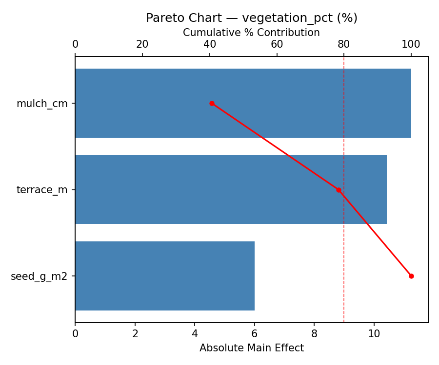
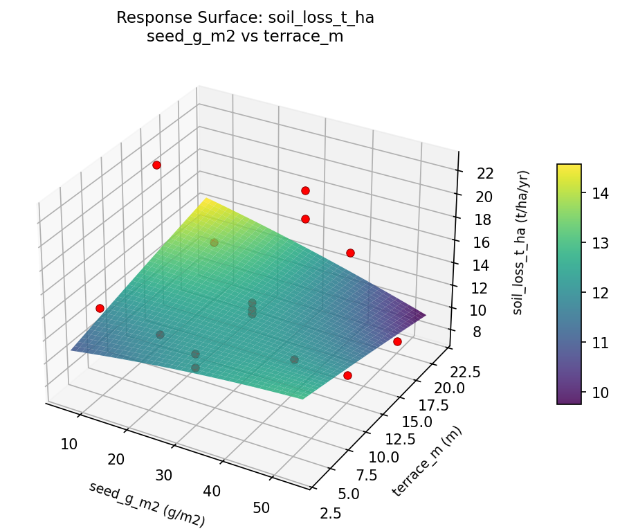

Summary
This experiment investigates hillside erosion control. Box-Behnken design to minimize soil loss and maximize vegetation establishment by tuning mulch depth, seed mix density, and terracing interval.
The design varies 3 factors: mulch cm (cm), ranging from 2 to 10, seed g m2 (g/m2), ranging from 10 to 50, and terrace m (m), ranging from 5 to 20. The goal is to optimize 2 responses: soil loss t ha (t/ha/yr) (minimize) and vegetation pct (%) (maximize). Fixed conditions held constant across all runs include slope pct = 30, soil type = silt_loam.
A Box-Behnken design was chosen because it efficiently fits quadratic models with 3 continuous factors while avoiding extreme corner combinations — requiring only 15 runs instead of the 8 needed for a full factorial at two levels.
Quadratic response surface models were fitted to capture potential curvature and factor interactions. The RSM contour plots below visualize how pairs of factors jointly affect each response.
Key Findings
For soil loss t ha, the most influential factors were mulch cm (77.7%), seed g m2 (17.8%), terrace m (4.4%). The best observed value was 7.6 (at mulch cm = 2, seed g m2 = 50, terrace m = 12.5).
For vegetation pct, the most influential factors were mulch cm (40.6%), terrace m (37.7%), seed g m2 (21.7%). The best observed value was 75.0 (at mulch cm = 10, seed g m2 = 30, terrace m = 5).
Recommended Next Steps
- Run confirmation experiments at the predicted optimal settings to validate the model.
- Consider whether any fixed factors should be varied in a future study.
Experimental Setup
Factors
| Factor | Low | High | Unit |
|---|
mulch_cm | 2 | 10 | cm |
seed_g_m2 | 10 | 50 | g/m2 |
terrace_m | 5 | 20 | m |
Fixed: slope_pct = 30, soil_type = silt_loam
Responses
| Response | Direction | Unit |
|---|
soil_loss_t_ha | ↓ minimize | t/ha/yr |
vegetation_pct | ↑ maximize | % |
Configuration
{
"metadata": {
"name": "Hillside Erosion Control",
"description": "Box-Behnken design to minimize soil loss and maximize vegetation establishment by tuning mulch depth, seed mix density, and terracing interval"
},
"factors": [
{
"name": "mulch_cm",
"levels": [
"2",
"10"
],
"type": "continuous",
"unit": "cm"
},
{
"name": "seed_g_m2",
"levels": [
"10",
"50"
],
"type": "continuous",
"unit": "g/m2"
},
{
"name": "terrace_m",
"levels": [
"5",
"20"
],
"type": "continuous",
"unit": "m"
}
],
"fixed_factors": {
"slope_pct": "30",
"soil_type": "silt_loam"
},
"responses": [
{
"name": "soil_loss_t_ha",
"optimize": "minimize",
"unit": "t/ha/yr"
},
{
"name": "vegetation_pct",
"optimize": "maximize",
"unit": "%"
}
],
"settings": {
"operation": "box_behnken",
"test_script": "use_cases/233_erosion_control/sim.sh"
}
}
Experimental Matrix
The Box-Behnken Design produces 15 runs. Each row is one experiment with specific factor settings.
| Run | mulch_cm | seed_g_m2 | terrace_m |
|---|
| 1 | 6 | 10 | 5 |
| 2 | 6 | 30 | 12.5 |
| 3 | 10 | 30 | 20 |
| 4 | 10 | 30 | 5 |
| 5 | 6 | 30 | 12.5 |
| 6 | 6 | 30 | 12.5 |
| 7 | 2 | 30 | 20 |
| 8 | 10 | 10 | 12.5 |
| 9 | 6 | 10 | 20 |
| 10 | 10 | 50 | 12.5 |
| 11 | 2 | 30 | 5 |
| 12 | 6 | 50 | 20 |
| 13 | 2 | 10 | 12.5 |
| 14 | 2 | 50 | 12.5 |
| 15 | 6 | 50 | 5 |
Step-by-Step Workflow
1
Preview the design
$ python doe.py info --config use_cases/233_erosion_control/config.json
2
Generate the runner script
$ python doe.py generate --config use_cases/233_erosion_control/config.json \
--output use_cases/233_erosion_control/results/run.sh --seed 42
3
Execute the experiments
$ bash use_cases/233_erosion_control/results/run.sh
4
Analyze results
$ python doe.py analyze --config use_cases/233_erosion_control/config.json
5
Get optimization recommendations
$ python doe.py optimize --config use_cases/233_erosion_control/config.json
6
Generate the HTML report
$ python doe.py report --config use_cases/233_erosion_control/config.json \
--output use_cases/233_erosion_control/results/report.html
Real-World Experiment Workflow
ℹ
Physical Geoscience Experiment? Use the Manual Workflow
Geoscience experiments involve real soil, rock, water, and field conditions. Results require physical sampling and laboratory analysis. The simulation script above is for demonstration. For your real experiments, use record, status, and export-worksheet.
$ python doe.py export-worksheet --config use_cases/233_erosion_control/config.json \
--format csv --output worksheet.csv
$ python doe.py status --config use_cases/233_erosion_control/config.json
$ python doe.py record --config use_cases/233_erosion_control/config.json --run 1
$ python doe.py analyze --config use_cases/233_erosion_control/config.json --partial
$ python doe.py analyze --config use_cases/233_erosion_control/config.json
$ python doe.py optimize --config use_cases/233_erosion_control/config.json
$ python doe.py report --config use_cases/233_erosion_control/config.json \
--output report.html
✔
Works Without a Test Script
The analysis pipeline doesn't care how results were produced. Record your measurements with record, and the full analysis, optimization, and reporting pipeline works identically. Use --partial to get early insights before all runs are complete.
Features Exercised
| Feature | Value |
|---|
| Design type | box_behnken |
| Factor types | continuous (all 3) |
| Arg style | double-dash |
| Responses | 2 (soil_loss_t_ha ↓, vegetation_pct ↑) |
| Total runs | 15 |
Analysis Results
Generated from actual experiment runs using the DOE Helper Tool.
Response: soil_loss_t_ha
Top factors: mulch_cm (77.7%), seed_g_m2 (17.8%), terrace_m (4.4%).
Pareto Chart

Main Effects Plot

Response: vegetation_pct
Top factors: mulch_cm (40.6%), terrace_m (37.7%), seed_g_m2 (21.7%).
Pareto Chart

Main Effects Plot

Response Surface Plots
3D surfaces fitted with quadratic RSM. Red dots are observed data points.
soil loss t ha mulch cm vs seed g m2

soil loss t ha mulch cm vs terrace m

soil loss t ha seed g m2 vs terrace m

vegetation pct mulch cm vs seed g m2

vegetation pct mulch cm vs terrace m

vegetation pct seed g m2 vs terrace m

Full Analysis Output
RSM surface: rsm_soil_loss_t_ha_mulch_cm_vs_seed_g_m2.png
RSM surface: rsm_soil_loss_t_ha_mulch_cm_vs_terrace_m.png
RSM surface: rsm_soil_loss_t_ha_seed_g_m2_vs_terrace_m.png
RSM surface: rsm_vegetation_pct_mulch_cm_vs_seed_g_m2.png
RSM surface: rsm_vegetation_pct_mulch_cm_vs_terrace_m.png
RSM surface: rsm_vegetation_pct_seed_g_m2_vs_terrace_m.png
=== Main Effects: soil_loss_t_ha ===
Factor Effect Std Error % Contribution
--------------------------------------------------------------
mulch_cm 5.4500 1.1044 77.7%
seed_g_m2 1.2500 1.1044 17.8%
terrace_m 0.3107 1.1044 4.4%
=== Summary Statistics: soil_loss_t_ha ===
mulch_cm:
Level N Mean Std Min Max
------------------------------------------------------------
10 4 12.0250 4.9628 7.6000 18.7000
2 4 17.4750 4.6871 11.6000 22.5000
6 7 12.2286 2.3521 7.6000 14.9000
seed_g_m2:
Level N Mean Std Min Max
------------------------------------------------------------
10 4 14.0250 6.2740 7.6000 22.5000
30 7 13.7714 2.6544 11.6000 18.7000
50 4 12.7750 5.5416 7.6000 19.6000
terrace_m:
Level N Mean Std Min Max
------------------------------------------------------------
12.5 7 13.6857 5.4373 7.6000 22.5000
20 4 13.5750 4.8992 7.6000 18.7000
5 4 13.3750 1.4705 11.6000 14.9000
=== Main Effects: vegetation_pct ===
Factor Effect Std Error % Contribution
--------------------------------------------------------------
mulch_cm 11.2500 3.9034 40.6%
terrace_m 10.4286 3.9034 37.7%
seed_g_m2 6.0000 3.9034 21.7%
=== Summary Statistics: vegetation_pct ===
mulch_cm:
Level N Mean Std Min Max
------------------------------------------------------------
10 4 55.5000 12.3423 38.0000 67.0000
2 4 44.2500 14.0089 24.0000 56.0000
6 7 51.1429 17.7710 29.0000 75.0000
seed_g_m2:
Level N Mean Std Min Max
------------------------------------------------------------
10 4 54.0000 13.5401 40.0000 71.0000
30 7 49.8571 12.5887 29.0000 67.0000
50 4 48.0000 23.2522 24.0000 75.0000
terrace_m:
Level N Mean Std Min Max
------------------------------------------------------------
12.5 7 46.5714 14.3162 24.0000 59.0000
20 4 50.7500 16.9975 38.0000 75.0000
5 4 57.0000 16.5932 34.0000 71.0000
Pareto chart (soil_loss_t_ha): use_cases/233_erosion_control/results/analysis/pareto_soil_loss_t_ha.png
Pareto chart (vegetation_pct): use_cases/233_erosion_control/results/analysis/pareto_vegetation_pct.png
Main effects (soil_loss_t_ha): use_cases/233_erosion_control/results/analysis/main_effects_soil_loss_t_ha.png
Main effects (vegetation_pct): use_cases/233_erosion_control/results/analysis/main_effects_vegetation_pct.png
Optimization Recommendations
=== Optimization: soil_loss_t_ha ===
Direction: minimize
Best observed run: #3
mulch_cm = 2
seed_g_m2 = 50
terrace_m = 12.5
Value: 7.6
RSM Model (linear, R² = 0.1811, Adj R² = -0.0422):
Coefficients:
intercept +13.5733
mulch_cm +1.9750
seed_g_m2 -0.8125
terrace_m +1.1125
RSM Model (quadratic, R² = 0.4037, Adj R² = -0.6695):
Coefficients:
intercept +15.9000
mulch_cm +1.9750
seed_g_m2 -0.8125
terrace_m +1.1125
mulch_cm*seed_g_m2 +0.8500
mulch_cm*terrace_m +1.3500
seed_g_m2*terrace_m -0.0250
mulch_cm^2 -2.0375
seed_g_m2^2 +0.5875
terrace_m^2 -2.9125
Curvature analysis:
terrace_m coef=-2.9125 concave (has a maximum)
mulch_cm coef=-2.0375 concave (has a maximum)
seed_g_m2 coef=+0.5875 convex (has a minimum)
Notable interactions:
mulch_cm*terrace_m coef=+1.3500 (synergistic)
mulch_cm*seed_g_m2 coef=+0.8500 (synergistic)
Predicted optimum (from linear model):
mulch_cm = 10
seed_g_m2 = 30
terrace_m = 20
Predicted value: 16.6608
Model quality: Weak fit — consider adding center points or using a different design.
Factor importance:
1. mulch_cm (effect: 4.0, contribution: 41.0%)
2. terrace_m (effect: 3.9, contribution: 40.7%)
3. seed_g_m2 (effect: 1.8, contribution: 18.2%)
=== Optimization: vegetation_pct ===
Direction: maximize
Best observed run: #10
mulch_cm = 10
seed_g_m2 = 30
terrace_m = 5
Value: 75.0
RSM Model (linear, R² = 0.2799, Adj R² = 0.0836):
Coefficients:
intercept +50.4667
mulch_cm -0.6250
seed_g_m2 +9.8750
terrace_m +3.7500
RSM Model (quadratic, R² = 0.5213, Adj R² = -0.3404):
Coefficients:
intercept +52.0000
mulch_cm -0.6250
seed_g_m2 +9.8750
terrace_m +3.7500
mulch_cm*seed_g_m2 +2.7500
mulch_cm*terrace_m -6.0000
seed_g_m2*terrace_m +3.0000
mulch_cm^2 +2.1250
seed_g_m2^2 -10.3750
terrace_m^2 +5.3750
Curvature analysis:
seed_g_m2 coef=-10.3750 concave (has a maximum)
terrace_m coef=+5.3750 convex (has a minimum)
mulch_cm coef=+2.1250 convex (has a minimum)
Notable interactions:
mulch_cm*terrace_m coef=-6.0000 (antagonistic)
seed_g_m2*terrace_m coef=+3.0000 (synergistic)
mulch_cm*seed_g_m2 coef=+2.7500 (synergistic)
Predicted optimum (from linear model):
mulch_cm = 6
seed_g_m2 = 50
terrace_m = 20
Predicted value: 64.0917
Model quality: Weak fit — consider adding center points or using a different design.
Factor importance:
1. seed_g_m2 (effect: 20.8, contribution: 61.8%)
2. terrace_m (effect: 9.7, contribution: 28.9%)
3. mulch_cm (effect: 3.1, contribution: 9.2%)